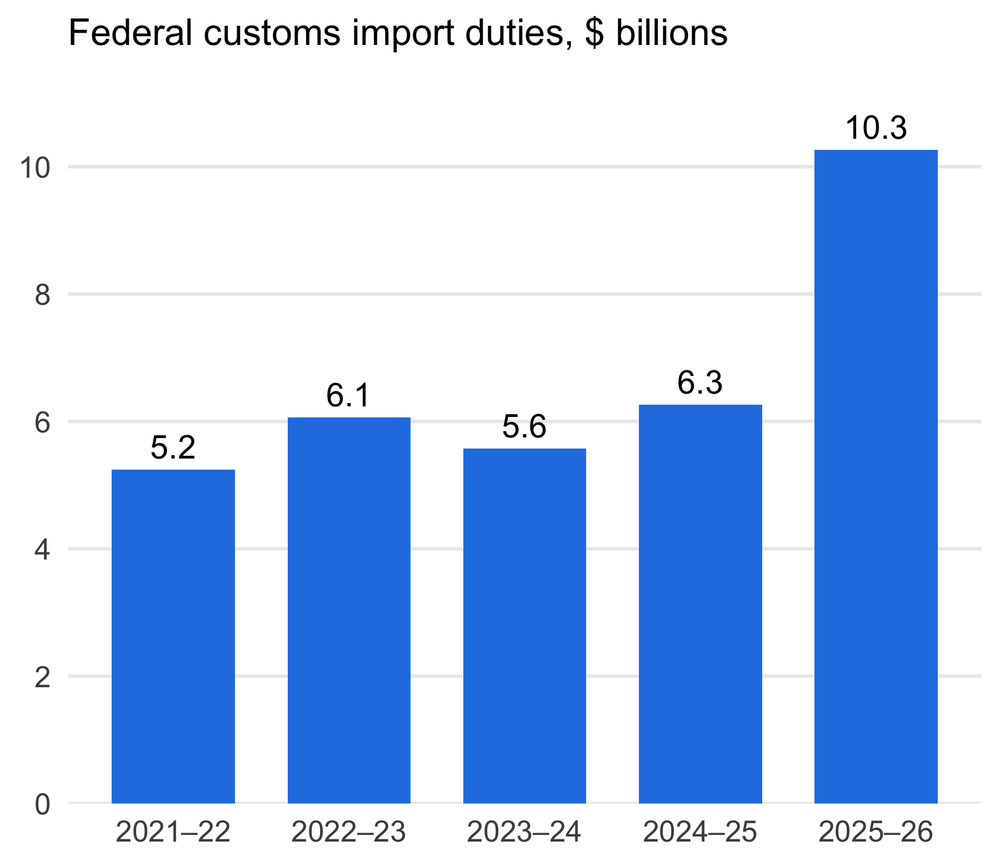
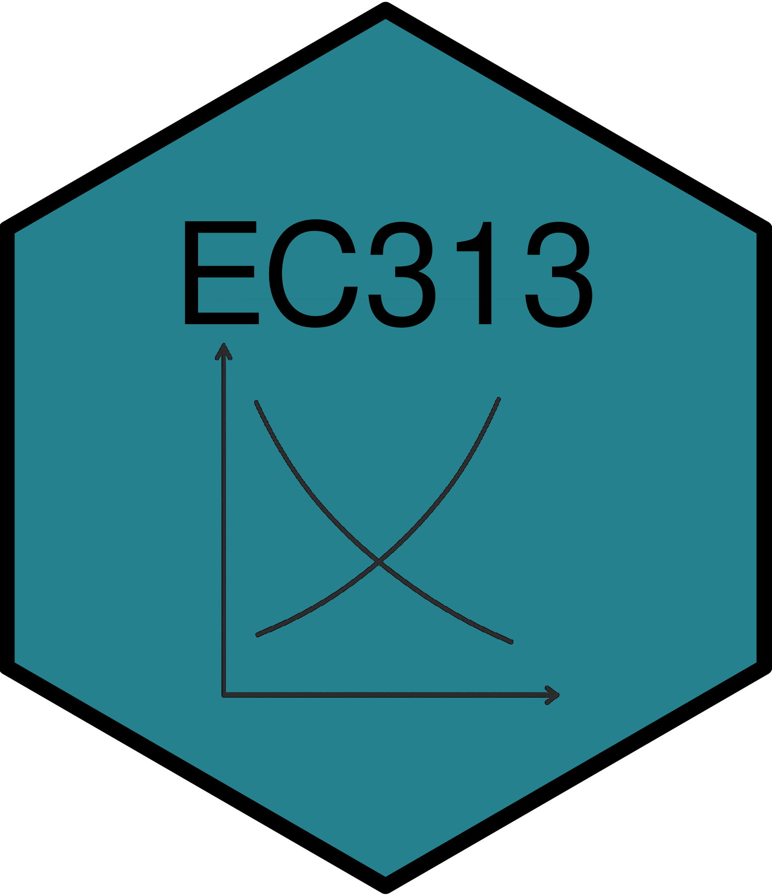
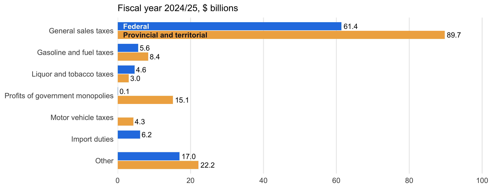
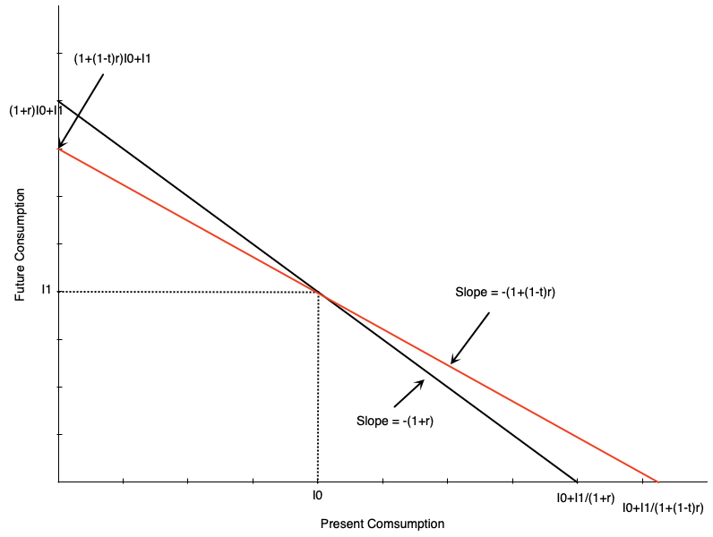

In this section we will:
General vs Selective


Where the Excess Burden Comes From
The substitution toward present consumption that the wedge causes, whether or not saving falls. Last deck showed saving can go either way
What the Evidence Says
A province replaces its income tax with a permanent sales tax that raises the same revenue. Which choices does the sales tax still distort?
A) Neither: a sales tax only falls on spending
B) Saving only: spending now costs more than spending later
C) Both: spending in each period is taxed
D) Work only: an hour of work buys fewer goods
E) Work only, but with no excess burden if hours don’t change
Progressiveness
Gender
| Alex | Jordan | |
|---|---|---|
| Earns | $200,000 | $80,000 |
| Spends | $60,000 | $80,000 |
| Homer, income tax | Marge, income tax | Homer, consumption tax | Marge, consumption tax | |
|---|---|---|---|---|
| Income now | 100.00 | 100.00 | 100.00 | 100.00 |
| Tax now | 50.00 | 50.00 | 50.00 | 26.19 |
| Consumption now | 50.00 | 25.61 | 50.00 | 26.19 |
| Saving now | 0.00 | 24.39 | 0.00 | 47.62 |
| Interest later | 0.00 | 2.44 | 0.00 | 4.76 |
| Tax later | 0.00 | 1.22 | 0.00 | 26.19 |
| Consumption later | 0.00 | 25.61 | 0.00 | 26.19 |
| PDV of taxes | 50.00 | 51.11 | 50.00 | 50.00 |
Priya and Sam each earn $1,000 now and nothing later, and \(r\) = 10%. A 25% sales tax is added to every price. Priya spends all $1,000 now. Sam spends $500 now (tax included) and the rest, with interest, next year. What is the present value of the tax each pays?
A) Priya $200; Sam about $191
B) Priya $200; Sam $200
C) Priya $200; Sam $210
D) Priya $250; Sam $250
E) It depends on how much Sam values next year’s spending
Tax Cascading
Tax on inputs, then tax again on the goods made from them: the steel is taxed, then the car made with it
Value Added
Sales minus purchases of material (intermediate) inputs. Wages, interest, rent and profit are all part of value added
| 10% VAT ($) | Pays its supplier | Charges its buyer | Remits | Keeps (value added) |
|---|---|---|---|---|
| Farmer | 0 | 400 + 40 | 40 | 400 |
| Miller | 400 + 40 | 700 + 70 | 70 − 40 = 30 | 300 |
| Baker | 700 + 70 | 950 + 95 | 95 − 70 = 25 | 250 |
| Grocer | 950 + 95 | 1,000 + 100 | 100 − 95 = 5 | 50 |
| Total | 100 | 1,000 |
With a 5% GST, a furniture maker buys $2,000 of wood (plus GST) and sells $5,000 of tables (plus GST). How much GST does the furniture maker send to the government?
A) $0, since only the store that sells to consumers remits
B) $100
C) $150
D) $250
E) $350
Investment goods
Three Types of VAT
What can a firm deduct when it buys investment goods?
Collection
Atkinson and Stiglitz (1980)
If the income tax is set optimally, and leisure is separable from goods, differential commodity taxes can’t raise welfare
Zero-Rated vs Exempt
| 10% GST ($) | Pays its supplier | Charges its buyer | Remits | Keeps |
|---|---|---|---|---|
| Farmer | 0 | 400 + 40 | 40 | 400 |
| Miller | 400 + 40 | 700 + 70 | 70 − 40 = 30 | 300 |
| Baker | 700 + 70 | 950 + 95 | 95 − 70 = 25 | 250 |
| Grocer (zero‑rated) | 950 + 95 | 1,000 + 0 | 0 − 95 = −95 | 50 |
| Total | 0 | 1,000 |
| 10% GST ($) | Pays its supplier | Charges its buyer | Remits | Keeps |
|---|---|---|---|---|
| Farmer | 0 | 400 + 40 | 40 | 400 |
| Miller | 400 + 40 | 700 + 70 | 70 − 40 = 30 | 300 |
| Baker | 700 + 70 | 950 + 95 | 95 − 70 = 25 | 250 |
| Grocer (exempt) | 950 + 95 | 1,000 + 0 | 0 | −45 |
| Total | 95 | 905 |
| 10% GST ($) | Pays its supplier | Charges its buyer | Remits | Keeps |
|---|---|---|---|---|
| Farmer | 0 | 400 + 40 | 40 | 400 |
| Miller (exempt) | 400 + 40 | 700 + 0 | 0 | 260 |
| Baker | 700 + 0 | 950 + 95 | 95 − 0 = 95 | 250 |
| Grocer | 950 + 95 | 1,000 + 100 | 100 − 95 = 5 | 50 |
| Total | 140 | 960 |
| Bread, 10% GST ($) | Taxed | Zero‑rated | Exempt |
|---|---|---|---|
| Farmer, miller, baker remit | 95 | 95 | 95 |
| Grocer charges the shopper | 100 | 0 | 0 |
| Grocer’s credit for GST paid | 95 | 95 | 0 |
| Grocer remits | 5 | −95 | 0 |
| Total GST | 100 | 0 | 95 |
| Grocer keeps | 50 | 50 | −45 |
A 10% VAT. A farmer sells wool to a spinner for $200, the spinner sells yarn to a knitter for $500, and the knitter sells sweaters to shoppers for $800. If yarn is made exempt, how much VAT is collected in total?
A) $20
B) $50
C) $80
D) $100
E) $150
Equivalence Conditions
An RST and a VAT are the same if they have the same rate and base, the RST falls only on final sales, and the VAT is consumption-type
A province with a 10% sales tax exempts small retailers. A corner store buys $150,000 of goods from wholesalers and sells them for $200,000. How much revenue does the province lose on this store?
A) $20,000 under either tax
B) $5,000 under either tax
C) $20,000 under a VAT; $5,000 under an RST
D) $15,000 under a VAT; $20,000 under an RST
E) $5,000 under a VAT; $20,000 under an RST
| Tax | Provincial rate | With GST | |
|---|---|---|---|
| NL, PE, NB | HST | 10% | 15% |
| NS | HST | 9% | 14% |
| ON | HST | 8% | 13% |
| QC | QST | 9.975% | 14.975% |
| BC | PST (RST) | 7% | 12% |
| MB | RST | 7% | 12% |
| SK | PST (RST) | 6% | 11% |
| AB, territories | none | — | 5% |
Customs Duties
Taxes on imports. Only Ottawa can levy them (Constitution Act, 1867)

Excise Taxes
Selective taxes on particular goods, levied by Ottawa and every province. Most are unit taxes, but some are ad valorem
| Good | Federal rate, 2026 |
|---|---|
| Gasoline | 10¢/L, suspended since April 20, 2026; half rate February 1 – March 31, 2027 |
| Cigarettes | $38.92 per carton |
| Spirits | $14.12 per litre of alcohol |
| Wine over 7% alcohol | 74.5¢ per litre |
| Beer over 2.5% alcohol | $37.69 per hectolitre |
| Cannabis | The greater of $1/g or 10% (shared with the provinces) |
| Luxury tax, cars over $100,000 | The lesser of 10% of the price or 20% of the amount over $100,000 |
Which argument supports a tax on gasoline but not a tax on cigarettes?
A) It is cheap to collect from a few producers
B) It charges people for using the roads
C) It makes buyers pay for harm they do to others
D) It discourages a habit the government disapproves of
E) It collects more from high-income households
The Personal Consumption Tax Base
Consumption = income − change in net wealth. Compare Haig-Simons: income = consumption + change in net wealth (Chapter 17). Saving is left out
Add
Subtract
Businesses
Individuals
Under the Hall-Rabushka flat tax, a retiree lives on dividends from shares she owns. Where is that income taxed?
A) At the firm, before the dividends are paid
B) Nowhere: the flat tax reaches only wages
C) On her own return, just like wages
D) On her own return, but only the part she spends
E) At the firm, and again on her own return
Which change would move Canada’s tax system closer to a personal consumption tax?
A) Taxing capital gains every year as they accrue
B) Taxing homeowners on the rent they save by owning
C) Taxing all gains on a principal residence
D) Raising the TFSA contribution limit
E) Raising the basic personal amount